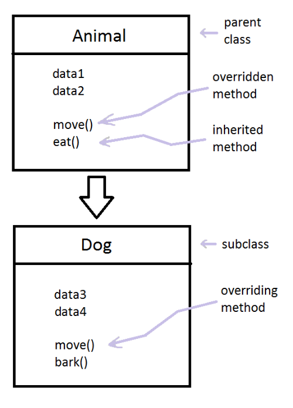
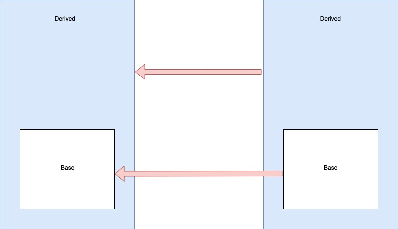
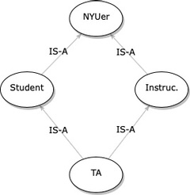

The ability of one class to inherit from another is a key advantage of object-oriented programing.
If we have several classes that have various attributes and functionality (i.e. fields and methods) in common, it can be convenient to put all the things that they share into a single class and have the other classes "inherit" the things they have in common from that new class. The fact that we only have to write the parts the classes have in common once leads many people to identify the main benefit of inheritance as code reuse.
We will see that another very important advantage of inheritance is that it makes it easier to create a collection (e.g. vector) that can group together instances of our different classes.
Let's look at an example: Suppose we have a number of classes that represent different types of animals. Certainly they must have a lot in common. If we take all that they have in common and put it in a single class Animal, then the other classes (Lion, Tiger, Bear, etc.) will be much simpler to write.
When we discuss inheritance, we say that the class that contains all the common information is the base or parent class. The classes that inherit from the base (or parent class) are called derived or child classes. An inheritance hierachy can be multiple levels. If it is, we might also refer to an ancestor class or a descendant class.
Inheritance is sometimes referred to as an IS-A relationship, because effectively any derived object is a base object, in the sense that anywhere you could use a base object, you should also be able to use any of the derived objects. (This is also known as Liskov's Substitutability Principle.) Sometimes people refer to IS-A as a test. If you cannot comfortably say: "My derived class is a base class", then something maybe wrong in your design. Using our example above of animals, we can say "a cat is a(n) animal," which helps verify that the Animal hierarchy makes sense.
Sometimes it is good to compare the IS-A relationship with the HAS-A relationship. In a HAS-A relation, one object has (or contains) an instance of another. Occasionally people will confuse the two. For example, which should we use for the relationship between a point and a circle? In some sense, you might view a circle as a point that has the added attribute of a non-zero radius. But could we substitute a circle anywhere we would use a point? Is a line defined by two circles? Doesn't sound good. On the other hand, a circle certainly has a point that defines where its center is. Thus, representing a circle as having a field that is a point sounds better than saying that a circle is a point.
A few more notes...
When creating a derived class, you need to specify public inheritance, as classes are private by default. No, you will never use private inheritance. Everything that is public in the base class becomes private in the derived.
All methods and fields from the base class are inherited by the derived. However, all fields private in the base can only be accessed by the base's methods. When initializing an instance of the derived class, such fields must be initialized by the base constructor and cannot be initialized without it. Lucky for us, the derived class constructors will always call a base constructor, even if you do not specify a specific one. When constructing a derived instance, the base portion will get constructed first, at the start of the initialization list, before any unique derived fields are initialized.
The Slicing "Problem": You can assign a derived object to a base object. However, any methods and fields unique to the derived will be lost.

Multiple Inheritance: Here is a good discussion.
